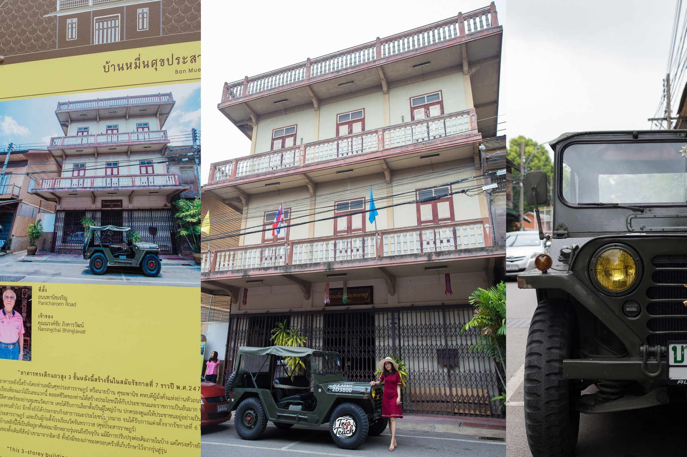
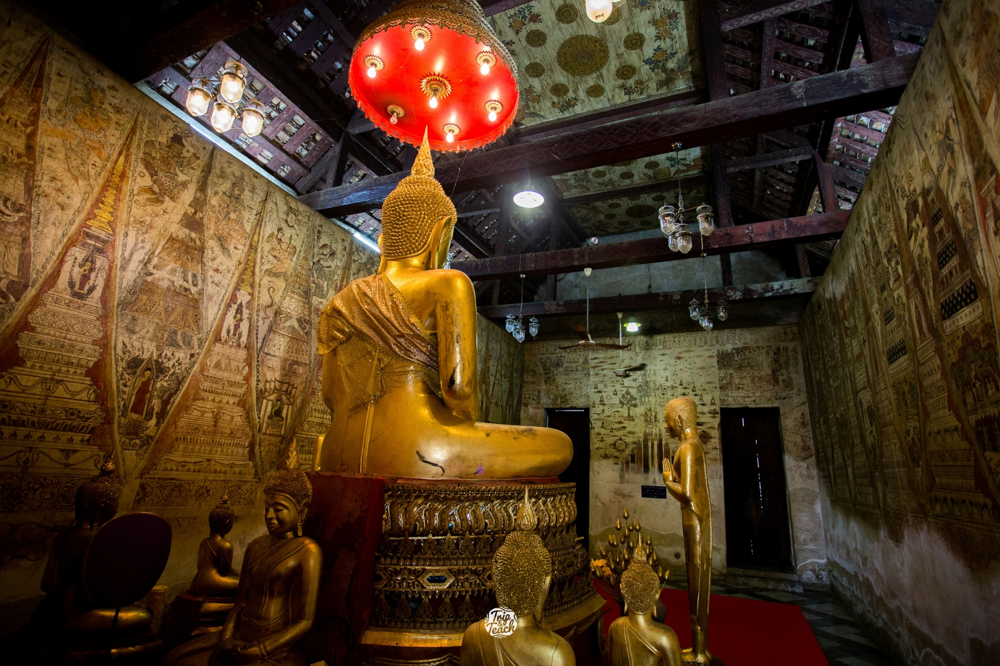

6 Unseen แลนมาร์คในเมืองเก่าริมน้ำ จ.เพชรบุรี
Author: Trip and Teach
6 Unseen แลนมาร์คในเมืองเก่าริมน้ำ จ.เพชรบุรี เที่ยว กิน เล่น ครบ ใครจะไปรู้ว่าจุดเช็คอินสุดว๊าวว จะซ่อนอยู่ในชุมชนแบบนี้
- 🕯 วัดเกาะ
- 🏆บ้านช่างทอง ป้าเนื่อง
- 🍦ช้อปขนมโบราณที่ตลาดริมน้ำเมืองเพชร
- 📸ถ่ายรูปกับสตรีทอาร์ต กลางตลาด ชิคๆ
- 🍉Walking Street เมืองเพชรของกินเพียบเด็ดทุกร้าน
- ☕ร้านระเบียงริมน้ำ ตามรอย ‘สิ่งเล็กๆ ที่เรียกว่ารัก’
- 🌟วัดมหาธาตุวรวิหาร
ที่นี่จะมีอยู่ 3 ชุมชนด้วยกัน ชุมชนวัดเกาะ ชุมชนซอยตลาดริมน้ำเพชรบุรี แล้วก็ชุมชนคลองกระแชง
 ชุมชนวัดเกาะเป็นชุมชนเก่าแก่
ชุมชนวัดเกาะเป็นชุมชนเก่าแก่ ผสมผสานไทย-จีน วัดวาอาราม ศาลเจ้า โรงเจ สถาปัตยกรรมเก่าแก่หลายยุคหลายสมัยหาได้ที่นี่เท่านั้นเลยค่ะ ถัดมา ชุมชนซอยตลาดริมน้ำเพชรบุรี เป็นเรือนแถวแบบเก่า ขายขนมเก่าปนใหม่ ขนมไทยโบราณหายากๆมาที่นี่มีหมดค่ะ ระหว่างทางเดินในตลาด เค้าก็มีภาพ Street Art ให้เด็กรุ่นใหม่มาโชว์ฝีมือกัน กลายเป็นจุดถ่ายรูปเก๋ๆกลางตลาดไปเล้ยย และชุมชนสุดท้ายคือชุมชนคลองกระแชง เป็นย่านเก่าที่มีความโมเดิร์นผสมปนเปเข้าไปด้วย ร้านอาหาร/คาเฟ่น่ารักๆที่มีกลิ่นอายความเป็นดั้งเดิม ลองเดินเล่นดูแล้วจะรู้ว่าควรมาจริงๆ
วัดเกาะ หรือ วัดเกาะแก้วสุทธาราม
ภายในมีภาพจิตรกรรมฝาผนังเขียนด้วยสีฝุ่น ภาพอลังการทุกด้านโบสถ ไม่ว่าจะเป็นภาพจักรวาลตามคติโบราณ ภาพพุทธประวัติตอนมารผจญ ภาพพุทธประวัติตอนสำคัญต่างๆ สวยและหาดูยากมากๆ
พิกัด
บ้านช่างทอง ป้าเนื่อง
ป้าเนือง เป็น ‘ช่างทองสี่แผ่นดิน’แล้วยังเป็นศิลปินแห่งชาติอีกด้วยค่ะ ป้าเนื่องเพิ่งเสียชีวิตตอนอายุ100ปี 7เดือน 7 วัน งานฝีมือเลยถูกส่งผ่านรุ่นต่อรุ่นมาสู่ลูกหลาน งานวิจิตศิลป์ทุกชิ้นทำด้วยฝีมือปราศจากการใช้เครื่องจักร ปราณีตมากๆ แต่ละชิ้นใช้มือแกะทองล้วนๆ เห็นความปราณีตชัดๆซักครั้งเป็นบุญตา
พิกัดช้อปขนมโบราณที่ตลาดริมน้ำเมืองเพชร
ขนมโบราณอร่อยๆที่หาทานกันได้ยากที่นี่มีหมดค่ะ ขนมตาลเอย ขนมครกโบราณเอย แม่ค้าที่นี่ก็น่ารัก ยิ้มแย้มแจ่มใส ส่วนที่ไม่ควรพลาดก็จะเป็น ‘ข้าวแช่แม่อร’ ข้าวแช่ตำรับเมืองเพชรดั้งเดิม ถือว่าเป็นร้านอร่อยประจำเมือง ควรค่าแก่กสนมาลองมากๆจ้าา ที่นี่เปิดทุกวัน จันทร์ ถึง อาทิตย์ ตั้งแต่ 8โมงเช้าถึง4โมงเย็นค่ะ
พิกัดถ่ายรูปกับสตรีทอาร์ตกลางตลาด ชิคๆ
ใครจะรู้ว่าเมืองเพชรจะมีาพวาดสตรีทอาร์ตเยอะขนาดนี้ มีตั้งแต่ไซส์มินิ ไปถึงจัมโบ้เลยจ้าา ดูน่ารักและลงตัว คนวาดก็จะมีความcreative ซ่อนตามซอกมุมต่างๆของกำแพงตึก เหมือนกำลังล่าสมบัติ ต้องตามเก็บกันหลายจุด
พิกัดWalking Street เมืองเพชรของกินเพียบเด็ดทุกร้าน
เด็ดจริงค่ะ ที่ถนนคนเดินเพชรบุรี เดินถนนนี้ลืมหิวเพราะของกินน่ากินตลอดทางจริงๆ ของเค้าดีมากกกก คนชอบกินเนื้อวัวหวรโดนร้านเนื้อย่างเสียบไม้ พร้อมข้าวเหนียวร้อนๆ เดินไปเดินมาต้องย้อนกลับมาซื้อเนื้อร้านนี้กว่า2รอบ ตลาดเปิดตั้งแต่ 4โมงเย็น ถึง สองทุ่มค่ะ
พิกัดร้านระเบียงริมน้ำ
ดินเลยถนนคนเดินเพชรบุรีมาหน่อยก็จะเจอร้านนี้ซ่อนตัวอยู่ ร้านอาหารที่เหมาะแก่การนั่งชิว ลมเย็น อาหารอร่อย เป็นบ้านเก่าโบราณอยู่ติดริมแม่น้ำเพชร เป็นที่ๆ หนัง ‘สิ่งเล็กๆ ที่เรียกว่ารัก’ ถ่ายทำเป็นบ้านนางเอกค่ะ ร้านจะหายากนิดนึง ต้องจอดรถด้านนอกแล้วเดินมาค่ะ
พิกัดวัดมหาธาตุวรวิหาร
เป็นวัดคู่บ้านคู่เมืองเพชรบุรีค่ะ ใครผ่านมาควรมาไหว้ให้เป็นสิริมงคล ตัววันเองสงบ ร่มรื่น และสวยมากกกก มีพระปรางค์ห้ายอดอันเป็นร่องรอยของอารยธรรมแบบเขมร เปิด ทุกวันตั้งแต่เวลา 07.00 – 18.00 ค่าเข้าชม ฟรี
พิกัด